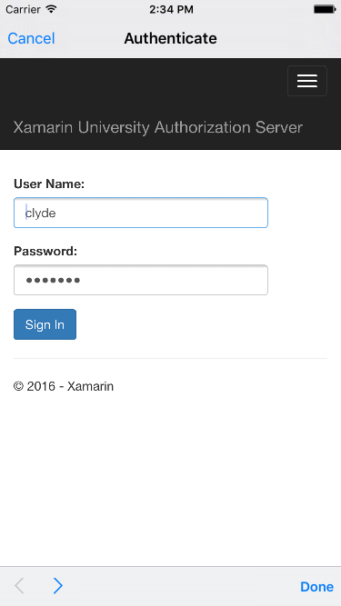

Duration
20 minutes
Goals
The primary goal of this lab is to use Xamarin.Auth to authenticate a user against an OAuth 2.0 protected web service. This lab is a continuation of the previous exercise. You can use your existing solution or start from the solution in the Exercise 1 Completed folder.
The image below shows the user-authorization sequence in progress. The HTML shown in the image is provided by the Authorization Server and presented to the user by Xamarin.Auth. Your job is to initiate this process and then capture the Access Token returned by the server after a successful authorization. You will use Xamarin.Auth's AccountStore to persist the Access Token and reload it the next time the app runs.
Assets
The provided Exercise 2 folder contains a subfolder named Completed with a solution you can use to check your work. Please make sure you have this folder before you begin.
Challenge
Continue work on the ComicBook application. In this exercise, you'll use the OAuth2Authenticator to display the server's login HTML and then save the Account information on successful login.
- In the Implicit Flow button's Clicked handler, subscribe to the OAuth2Authenticator's Completed and Error events.
- In the Authorization Flow button's Clicked handler, subscribe to the OAuth2Authenticator's Completed and Error events - use the same handlers you used in the previous step.
- In the Completed and Error handlers, unsubscribe your handlers from both events.
- In both Clicked handlers, create an OAuthLoginPresenter and call its Login method to start the authentication process.
- Create an AccountStore in the MainPage constructor and store it in a field.
- Attempt to load a saved account from the account store; if it exists save it in a field.
- In the Completed handler, test if the authentication succeeded. If yes, delete the existing account from the store and save the new account.
- Run the application and test both the Implicit and Authorization Code flows.
Steps
Subscribe to the OAuth2Authenticator's Completed and Error events
- Open MainPage.xaml.cs in the PCL.
- In the ImplicitButtonClicked method, subscribe to the
OAuth2Authenticator'sCompletedevent; create a named method OnAuthCompleted. - In the ImplicitButtonClicked method, subscribe to the
OAuth2Authenticator'sErrorevent; create a named method OnAuthError. - Repeat the previous 2 steps in AuthorizationCodeButtonClicked. Use the same methods: OnAuthCompleted and OnAuthError.
Unsubscribe from the OAuth2Authenticator's Completed and Error events
OAuth2Authenticators are designed to be used once. If we ever needed to re-authenticate we would create a new instance. This means we can unsubscribe our event handlers on both success and failure.
- In the OnAuthCompleted method, unsubscribe from the OAuth2Authenticator's Completed
eventand the Errorevent; thesenderparameter is a reference to the instance of the OAuth2Authenticator. You'll need to castsenderto an OAuth2Authenticator.
Create an OAuthLoginPresenter and Login to the server
- In the ImplicitButtonClicked method, create an OAuthLoginPresenter and call its Login method, passing in the OAuth2Authenticator you created in the previous exercise.
- In the AuthorizationCodeButtonClicked method, create an OAuthLoginPresenter and call its Login method, passing in the OAuth2Authenticator.
Create an AccountStore and manage Account objects
- Declare a field named account of type Account.
- Declare a field named store of type AccountStore.
- In MainPage's constructor, create an AccountStore using the static AccountStore.Create method. Save it in the store field.
-
Still in the constructor, attempt to load an account using store's FindAccountsForService method, passing in the
provided
conststringServiceId. If an account is found, save it to the account field. -
In the Completed handler, test if the authentication succeeded. If so, delete any previously loaded account from
the store and save the new account from the
AuthenticatorCompletedEventArgsparameter to the store. - Run the application and test both the Implicit and Authorization Code flows. Use Clyde as the username and xamarin as the password.
Summary
In this exercise, you used OAuth2Authenticator to manage the user-authorization process with an OAuth 2.0 protected server. You saved the Access Token to persistent storage and reloaded it at startup so the user will not need to re-login every time they run the app.